-DEPARTMENT OF SOFTWARE ENGINEERING-
-FAST NUCES ISLAMABAD-
-FAST NUCES ISLAMABAD-
Comp Networks
Phase 3: Research Implementation
& Experimental Evaluation
& Experimental Evaluation
Agentic AI for network change validation in CI/CD pipelines using network digital twins
Quick recap. In Phase 1 we argued that CI/CD pipelines for network changes are static: they either run tests that have nothing to do with a change, or they run the whole suite every time. In Phase 2 we read eight more papers, sharpened the gap (no one compares an intent-aware agent with a fixed CI suite on the same network changes, and nobody measures false approvals of a deployment gate) and turned the idea into a 12-step methodology with an architecture: an AI agent reads the intent of a change, works out its blast radius, writes change-specific tests, runs them in a two-tier Network Digital Twin (NDT) and returns approve, block or escalate to the pipeline.
In this phase we actually built it and measured it. Concretely, Phase 3 delivers:
The core research question did not change: can an intent-aware agent pick and run better tests than a fixed checklist, without approving changes it should not? The twin is still the test bench, not the thing under study.
We implemented every block of the Phase-2 architecture diagram. Figure 1 is the architecture as it now exists in code; colours mark which parts use an LLM (blue) and which are plain deterministic code (green / orange). The LLM is used only where judgement about the ticket is needed; everything that can be computed exactly is computed exactly.
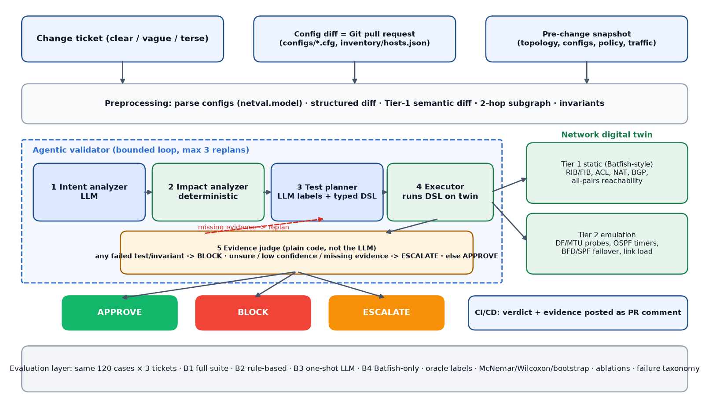
| Module | What it implements |
|---|---|
| netval/model.py | Device/interface data model; renderer and parser of an IOS/FRR-like config dialect (interfaces, OSPF, BGP, static, prefix-lists, route-maps, ACLs, NAT, VLANs/trunks). Every change is a real text diff. |
| netval/twin.py | The two-tier digital twin: control plane (connected/static/OSPF/eBGP/redistribution, admin distance, ECMP), data plane (ACL first-match, NAT, loops, null routes, L2 VLAN/trunk attachment) and Tier-2 emulation (DF/MTU probes, silent-failure convergence with BFD/dead timers/SPF throttle, link load from a traffic matrix). |
| netval/topologies.py | The three lab networks (campus, data-centre leaf-spine, ISP based on NSFNET from Topology Zoo). |
| netval/cases.py | Change-case generator: 62 templates over 8 classes, safe and faulty implementations, ticket versions. |
| netval/oracle.py | Exhaustive ground-truth oracle (Tier 1 + Tier 2, all pairs, all services, all links). |
| netval/impact.py | Preprocessing: structured diff, unified diff, Tier-1 semantic (differential) diff, blast radius, 2-hop subgraph. |
| netval/dsl.py | Typed test language (9 test types), validator, executor on the twin, CI time-cost model, coverage keys. |
| netval/agent.py | The proposed agent: intent analyzer, test planner, entry compiler, evidence judge, bounded replan loop; B3 one-shot baseline. |
| netval/baselines.py | B1 fixed full suite, B2 rule-based selection, B4 Batfish-style static-only gate. |
| netval/llm.py | Local (Ollama, Qwen2.5-7B-Instruct) and hosted (Claude Sonnet 5.5) back-ends with an on-disk call cache. |
| netval/experiment.py, analysis.py | Paired, resumable, parallel experiment runner; metrics and statistical tests. |
| ci/validate_pr.py, ci/.github/... | CI/CD gate: exit code 0/1/2 = approve/block/escalate, PR comment in Markdown. |
| gui/app.py | NetVal Studio web GUI (Flask): browse cases, run the agent live, see every stage, compare with baselines. |
| tests/test_twin.py | 12 verification tests of the twin against known protocol behaviour. |
Phase 2 planned Batfish for Tier 1 and containerlab + FRRouting for Tier 2. Both need Docker on Linux, which our machine does not have (Section 1.7), so we wrote the twin ourselves in Python, keeping the split of responsibilities that the methodology depends on:
Because the twin is our own code we had to show it behaves like a network. tests/test_twin.py contains 12 checks against known protocol behaviour (ACL first-match and shadowing, ExStart on MTU mismatch, a consistent low MTU being invisible to Tier 1 but caught by Tier 2 DF probes, BFD vs dead-interval convergence, timer mismatch, NAT return paths, static-route loops, BGP route-map leaks, ECMP load split, oracle labelling of an overload). All 12 pass (Figure 15).
The five components of Phase 2 Step 5 are implemented as follows. Prompts are fixed and stored in netval/agent.py; outputs are always JSON and are validated before use.
| # | Component | Implementation | LLM? |
|---|---|---|---|
| 1 | Intent analyzer | Reads the ticket (and the diff, only to name devices) and returns goal, scope, expected effects, things that must not change and a confidence judged from the ticket text alone (high / medium / low). | Yes |
| 2 | Impact analyzer | Runs the Tier-1 differential between the pre- and post-change snapshots and lists every behavioural difference as an impact entry with an id: changed flows (per service), routes added/removed, adjacencies and BGP sessions, changed traffic paths, links receiving shifted demand, and Tier-2-relevant config objects (MTU, timer, BFD, SPF changes). | No |
| 3 | Test planner | Labels every impact entry intended, unintended or unsure against the ticket, and adds extra tests in the typed DSL for effects the ticket promises (e.g. a 9000-byte probe, a path via X). Labelled entries are compiled deterministically into tests: intended -> expect the new behaviour, unintended -> expect 'unchanged'. Load / MTU / timer entries always become Tier-2 safety tests. | Yes |
| 4 | Test executor | Validates every test (unknown names, wrong fields -> 'invalid'), picks the cheapest tier that can run it and executes it on the twin. Records evidence and a modelled CI time per test. | No |
| 5 | Evidence judge + gate | Plain code, never the LLM (rules in Table 4). Missing evidence sends the planner back with feedback, at most 3 replans. | No |
Following the LLNet lesson from Phase 2 (structured outputs beat free code), the LLM never writes scripts. It fills objects of a small typed language, which the executor validates and runs:
| Test | Fields | Tier | Meaning |
|---|---|---|---|
| reach | src, dst, svc|*, expect allow/deny/unchanged | 1 or 2 | flow disposition (incl. stateful return path) |
| path | src, dst, via, expect true/false | 1 or 2 | all ECMP paths go through a router |
| route | dev, prefix, expect present/absent/unchanged | 1 or 2 | route in a device's RIB |
| acl | dev, acl, src, dst, svc, expect | 1 | formal ACL decision |
| adj | a, b, expect up/down/unchanged | 1 or 2 | OSPF adjacency on a link |
| like | host, as | 1 or 2 | after a VLAN move the host has exactly the access of a reference host |
| mtu | src, dst, size, expect pass/fail | 2 | DF probe of a given size |
| conv | a, b, max_s | 2 | traffic-loss time after a silent failure of a link |
| load | a, b, max_pct | 2 | utilisation of a link under the telemetry traffic matrix |
| inv | no_loops / mgmt_reachable / isolation / no_leak | 1 | network invariants (appended automatically) |
| Order | Rule | Verdict |
|---|---|---|
| 1 | Any executed test or invariant fails | BLOCK |
| 2 | The planner marked any impact entry 'unsure' (ambiguous ticket) | ESCALATE |
| 3 | Intent confidence is low and the change alters behaviour | ESCALATE |
| 4 | Invalid tests, impacted objects without a test, or nothing confirms the change does what it should | REPLAN (max 3), then ESCALATE |
| 5 | Otherwise: all tests pass, 100% of impacted objects covered, no tool error | APPROVE |
ci/validate_pr.py takes the base branch, the PR branch and the PR description, runs the agent and writes a verdict JSON and a Markdown PR comment (verdict, reason, every test with tier and evidence, the agent trace). The exit code is 0 = approve, 1 = block (fails the pipeline), 2 = escalate (request a human reviewer). ci/.github/workflows/netval.yml is the GitHub Actions job for the network source-of-truth repository; it is meant for a self-hosted runner with the local model, so configs never leave the company. Section 8 shows the gate blocking a faulty PR and approving the correct one.
We did not receive specific written feedback on Phase 2 in class, so this list documents every place where the implementation differs from what we promised, and why. We think it is more honest to state them than to hide them.
| Phase-2 plan | Phase-3 implementation | Reason / effect |
|---|---|---|
| Tier 1 = Batfish, Tier 2 = containerlab + FRR | Own Python twin with the same two tiers (Section 1.2), verified by 12 tests | No Docker/Linux on our machine (Sec. 1.7). Keeps the static-vs-emulation split; protocol fidelity is lower than real FRR. |
| Twin time = real tool time | Modelled CI time per test (Table 11), Batfish/containerlab-like costs + measured LLM latency | Our twin answers in milliseconds, which would make every time comparison meaningless. |
| ~120 change cases, half unsafe | 120 cases, 62 unsafe / 58 safe, from 62 templates | As planned. Some templates are fault-only (the ticket itself is harmful, e.g. a drain that overloads the backup path). |
| Labels checked by both of us + a third reviewer | Labels from an exhaustive oracle; generator intent cross-checked; variants the oracle disagreed with were dropped | No time for manual dual-labelling of 360 pairs; the oracle is reproducible. |
| Split 20% / 80% by topology | Campus (33 cases, 27.5%) for prompt tuning, data-centre + ISP (87 cases) for testing | Kept the 'tune on one topology, test on unseen ones' rule; campus is smaller than planned. |
| Main model hosted, plus local Qwen2.5-7B | Hosted Claude Sonnet 5.5 for all experiments; local Qwen2.5-7B on a stratified subset of 32 test cases (clear tickets) | Local inference ran at 2-4 tokens/s on a 16 GB laptop under memory pressure; the full grid would have taken days. |
| 5 repeats per LLM run | 3 repeats for the main agent (all ticket versions); 1 for baselines and ablations | Cost/time; agreement across repeats is high (Section 7), so more repeats add little. |
| Temperature 0.2 | Local model 0.2; hosted Sonnet 5.5 uses its default (the API rejects other values) | API constraint. |
| Impact analyzer as an agent | Deterministic Tier-1 differential | It is computable exactly; using an LLM would only add errors. |
| Planner writes the whole plan | Planner labels impact entries + writes extra tests; labelled entries compiled to tests | Fewer output tokens and no hallucinated object names for the parts that are mechanical. |
| (not in Phase 2) | New DSL test 'like' for VLAN moves; host MTU in the context package | Found during prompt tuning on the campus split: the planner guessed access rules for moved hosts. |
| Setting | Value |
|---|---|
| Hosted LLM | claude-sonnet-5-5 (Anthropic API), effort 'medium', thinking only between tool calls, server-side refusal fallback on |
| Local LLM | qwen2.5:7b-instruct (Q4_K_M) via Ollama 0.40, temperature 0.2, seed = repeat id, JSON mode, context 6144, 2 parallel slots |
| Replan budget / coverage threshold | max 3 replans; 100% of impacted objects (path-only entries excluded) |
| Topology context | 2-hop subgraph around the changed devices (k = 2) |
| SLAs (invariants) | failover <= 3 s, link utilisation <= 90%; no loops; management reachability; isolation pairs; no leak of internal prefixes |
| Repeats | agent (hosted): 3 x 3 ticket versions; baselines/ablations: 1; deterministic baselines are run once |
| Caching / logs | every LLM call cached on disk by (model, prompt, seed); every run logged as JSONL with trace, tests and evidence |
| Run order | jobs shuffled implicitly by thread scheduling; results keyed by (case, ticket, repeat), so runs are resumable |
Everything is reproduced with: python gen_dataset.py (dataset), ./run_hosted.sh and ./run_local.sh (experiments), python analyze.py (tables/figures) and python report/build.py (this report). With the LLM cache present, the whole evaluation replays offline.
| Item | Our device / version | Compatibility note |
|---|---|---|
| Machine | Apple MacBook, M4 (10 cores), 16 GB unified memory, macOS 26.5 | Phase 2 assumed a 16-core / 32 GB Linux box + GPU |
| Container runtime | not available (no Docker Desktop) | Batfish and containerlab need Docker; containerlab is Linux-first, so Tier 1/2 were re-implemented in Python |
| Python | 3.12.15 (venv): numpy 2.5, scipy 1.18, networkx 3.7, statsmodels 0.15, matplotlib 3.11, flask 3.1, anthropic 2.8 | all pure-Python, cross-platform |
| Local LLM runtime | Ollama 0.40.16, Qwen2.5-7B-Instruct Q4 (4.7 GB), Metal GPU | fits in 16 GB, but slowed to 2-4 tok/s when the system was swapping (browser using several GB) |
| Hosted LLM | Claude Sonnet 5.5 via API key in a local .env file (never committed) | total experiment cost about $24 |
| Report / screenshots | Google Chrome 157 (headless) for PDF and GUI screenshots | - |
We built the three networks we promised (Figure 2). All configs are text files in our IOS/FRR-like dialect, so a change is a real pull request diff. Each snapshot also has a host inventory, the physical links, the operator's intent policy (invariants and SLAs) and a telemetry traffic matrix used by Tier 2.
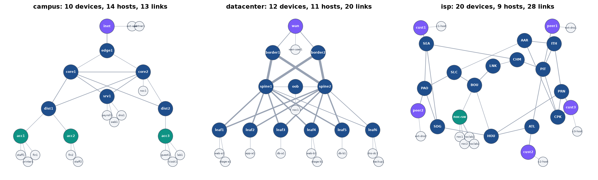
| Topology | Devices | Hosts | Links | Protocols / features | Use |
|---|---|---|---|---|---|
| Campus | 10 | 14 | 13 | OSPF, eBGP to ISP, NAT overload, 4 user VLANs on 3 access switches, server/NOC segments, 5 ACLs | prompt tuning |
| Data centre (leaf-spine) | 12 | 11 | 20 | 2 spines, 6 leaves (L3 gateways), 2 borders with eBGP to a WAN, 2 tenants, jumbo-capable servers | test |
| ISP (NSFNET + edges) | 20 | 9 | 28 | 14-router NSFNET backbone (Topology Zoo), 3 customers (one dual-homed), 2 upstream peers, NOC VLANs | test |
The generator (netval/cases.py) contains 62 change templates. Each template is one realistic change request. For most templates we generate the correct implementation and one faulty implementation of the same ticket, with the fault drawn from the families used by NetArena [4] and CORNETTO [6] (wrong port, shadowed rule, over-broad rule, wrong ACL, unresolvable next hop, static route on the wrong device creating a loop, one-sided OSPF cost, cost typo, timer mismatch, BFD removed, SPF delay typo, MTU on one end only, MTU value typo, prefix-list typo, route-map leak, redistribution without route-map, wrong VLAN id, host not re-addressed, interface shut on the wrong port, and more). Some templates are fault-only: the diff does exactly what the ticket says, but the ticket itself is harmful (draining a link that overloads the backup path, a static pin that creates a micro-loop on failure). The result is 120 cases (62 unsafe, 58 safe) covering all 8 classes and 28 distinct fault families (Figure 3).
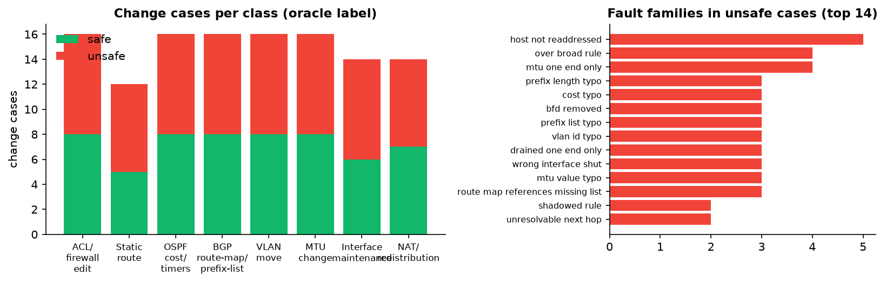
Following Cleverest [5], every case has three tickets: clear (devices, objects and expected effect), vague (goal only) and terse (only an ID). The faulty and the correct implementation of a template share the same tickets, so the only difference the agent can use is the network behaviour. Example (template D-ACL-1):
| Version | Ticket text |
|---|---|
| clear | Staging needs database access: on leaf3 add '25 permit tcp 10.101.2.0/24 10.103.1.0/24 eq 5432' to ACL_DBA_OUT (before the final deny). Only stage-a1 -> db-a1 on tcp/5432 should open. |
| vague | Let the tenant-A staging server talk to the tenant-A database. |
| terse | fix ticket #8768 |
Phase 2 asked for ground truth from an exhaustive oracle. netval/oracle.py profiles the network before and after the change with both tiers, exhaustively: every host pair x 7 services, every route on every device, every adjacency, all four invariants, 1500-byte and jumbo DF probes between all host pairs, the failover time of every redundant link and the utilisation of every link. Each template also carries a machine-readable intent spec (which flows, routes, adjacencies, paths, probes or drained links the ticket asks for). A change is unsafe if an invariant breaks, the intended effect is not achieved, or anything else changed that the intent does not explain (reachability, routes, adjacencies, MTU, convergence SLA, utilisation SLA). A generated 'safe' variant that the oracle flags, or a 'fault' it does not flag, is discarded, so labels and variants never disagree.
leaf3 | ip access-list ACL_DBA_OUT | + 25 permit ...)..env and never logged.| Metric | Definition (computed per change x ticket version) |
|---|---|
| Fault detection rate | share of unsafe changes that were blocked or escalated |
| False approval rate | share of unsafe changes that were approved - our main safety metric (target 0) |
| False block rate | share of safe changes that were blocked |
| Safe approval (automation) rate | share of safe changes approved without a human |
| Escalation rate / precision | share of all changes sent to a human / share of escalations that were really unsafe |
| Correct verdict rate | unsafe -> block or safe -> approve (escalations count as not automated) |
| Required-test coverage | share of the expert 'required tests' of the case (stored with every template) that the plan contained |
| Tests executed, CI time | number of tests run; modelled wall-clock time from PR to verdict = tool time (Table 11) + measured LLM latency |
| Cost | LLM tokens and USD per change |
| Consistency | Fleiss' kappa and unanimity of verdicts over the 3 repeated runs |
| Test / phase | Modelled cost (s) | Basis |
|---|---|---|
| Tier-1 snapshot initialisation (pre + post) | 25 | Batfish snapshot init for 10-20 devices |
| Tier-1 query (one test, or one all-pairs batch per source+service for B1/B2) | 1 | Batfish question latency |
| Tier-2 lab boot + initial convergence | 150 | containerlab + FRR boot of 10-20 nodes |
| Tier-2 probe (ping / traceroute / MTU) | 3 | per probe |
| Tier-2 failover experiment (conv) | 45 | fail link, wait for reconvergence, restore |
| Tier-2 load measurement | 20 | one iperf-style traffic run (all links at once for B1) |
| Method | Detection | False approval | False block | Escal. | Safe auto-approved | Req. cov. | Tests | CI min |
|---|---|---|---|---|---|---|---|---|
| B1 Fixed full suite | 80% [68%-91%] | 20% [9%-32%] | 62% [49%-76%] | 0% | 38% | 90% | 1559 | 20.5 |
| B2 Rule-based | 60% [46%-74%] | 40% [26%-54%] | 55% [40%-69%] | 0% | 45% | 84% | 120 | 1.8 |
| B4 Batfish-only | 60% [45%-73%] | 40% [27%-55%] | 0% [0%-0%] | 60% | 38% | 64% | 6 | 0.8 |
| B3 One-shot LLM (hosted) | 98% [93%-100%] | 2% [0%-7%] | 50% [34%-65%] | 0% | 50% | 31% | 28 | 3.7 |
| Proposed agent (hosted Sonnet 5.5) | 98% [93%-100%] | 2% [0%-7%] | 5% [0%-12%] | 2% | 93% | 94% | 12 | 2.4 |
B1 is the coverage upper bound, but it is blind to intent. It detects 80% of unsafe changes and needs on average 1559 tests and 21 modelled minutes per change. It still approves 20% of the unsafe changes: those are changes that do nothing or do the wrong thing without breaking anything that was true before (wrong port, drained one end only, cost typo, one sided cost). A golden-state suite cannot know that the ticket asked for a new route or a new permit. The other side is worse: it blocks 62% of the safe changes, because every intended behaviour change is a deviation from the golden state. In practice an engineer would have to update the suite by hand for most PRs.
B2 is cheap but misses side effects. Rules around the changed device cut the suite to 120 tests, but detection falls to 60% and false approvals rise to 40%: faults whose effect shows up away from the changed device (overloaded backup paths, leaks seen only by the peer, failover loops) are outside the bundle. It still blocks 55% of safe changes for the same reason as B1.
B4 never blocks a safe change, but it is not a gate. It escalates 60% of all changes (it cannot tell intended from unintended differences) and approves 40% of the unsafe ones - every fault that has no static footprint (mtu value typo, wrong port, static pin breaks failover, bfd removed, drained one end only). This is the CORNETTO [6] observation in our setting: static verification is strong but cannot see timing, packet size or load.
B3 (one-shot LLM) shows that the model alone is not the contribution. With the same model but no impact analysis, invariants, evidence rules or feedback it writes 28 tests per change and, on clear tickets, detects 98% of unsafe changes - but it blocks 50% of the safe ones, because many of its own expectations are wrong (it guesses access rules the ticket never mentioned). It also has no way to say 'I am not sure': with terse tickets it approves 22% of unsafe changes, where the full agent approves none. A one-shot plan is a list of guesses; the agent's plan is anchored to what actually changed.
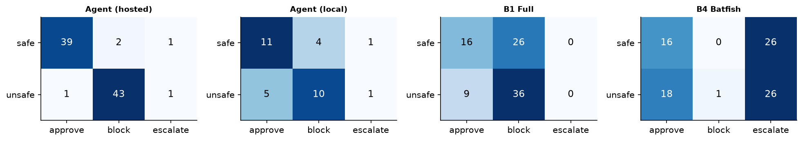
All figures are produced by analyze.py from the logged runs on the test split; error bars are 95% bootstrap intervals that resample whole change cases.
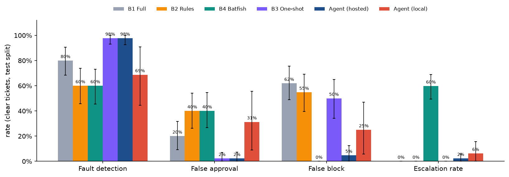
Figure 5 is the main result. The proposed agent detects 98% of unsafe changes with a false-approval rate of 2.2% while blocking only 5% of safe changes and escalating 2%. It is the only method that is good on both axes at once: B1 matches it on neither, B4 avoids false blocks only by escalating most changes.
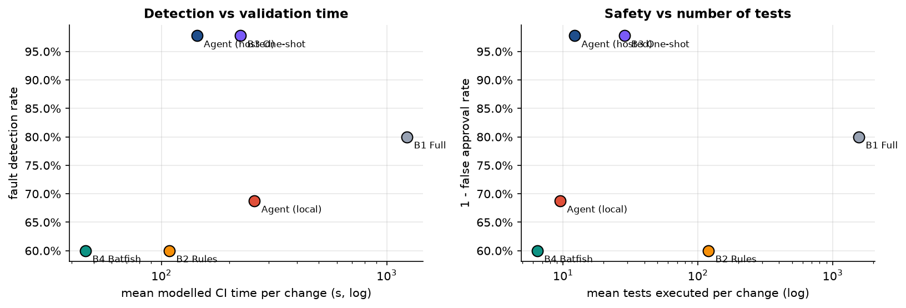
Figure 6 answers the efficiency half of RQ1. The agent runs 12 tests on average (128x fewer than B1) and needs 2.4 modelled minutes instead of 21 (8.6x faster), including 6 s of LLM time. Most of the agent's remaining time is the Tier-2 lab boot, which is only paid when a Tier-2 test is needed.
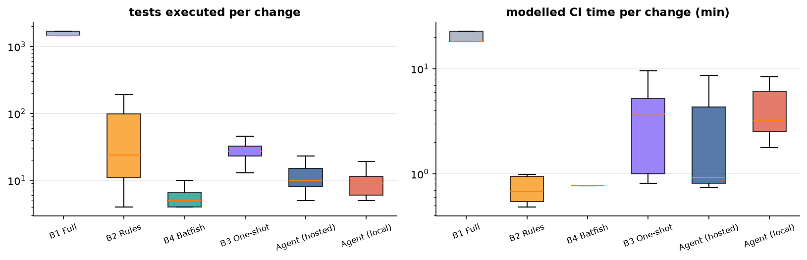
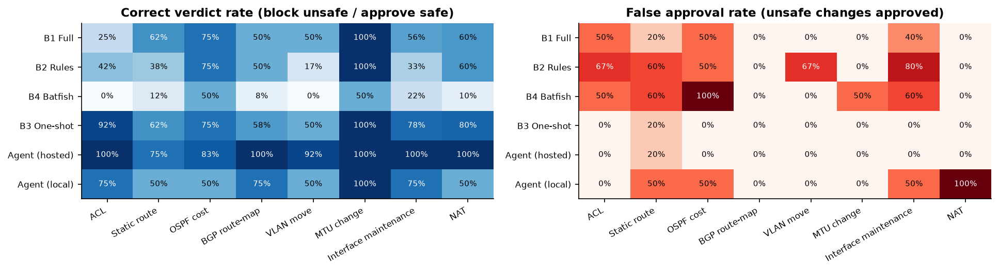
Figure 8 breaks the results down by change class. B4's false approvals (ospf 6, acl 3, static route 3, mtu 3, maintenance 3) come from two sources: faults with no static footprint (OSPF timers and SPF delay, MTU typos, overloaded backup paths, failover loops) and changes that simply do nothing (a shadowed rule, a wrong port) - B4 has no notion of what should have changed. B2's misses (acl 4, vlan move 4, maintenance 4, static route 3, ospf 3) are spread over five classes, wherever the fault shows up away from the changed device. The agent's 4 non-correct verdicts on clear tickets are ospf 2, static route 1, vlan move 1; its only false approval is a static route (Section 7.4).
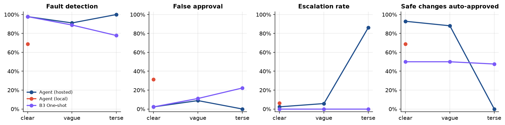
Figure 9 is the RQ3 experiment. Going from clear to vague tickets, the agent's detection drops from 98% to 91% and false approvals rise from 2.2% to 8.9%: with only a goal, the planner sometimes accepts a side effect as part of that goal. With terse tickets (only an ID) the agent behaves as designed - it approves nothing (0% of safe changes auto-approved), escalates 86% of all changes and still blocks the unsafe changes whose failures are intent-independent (invariants, MTU, load, failover), so its false-approval rate is 0.0%. Ticket quality decides how much can be automated, not how safe the gate is.
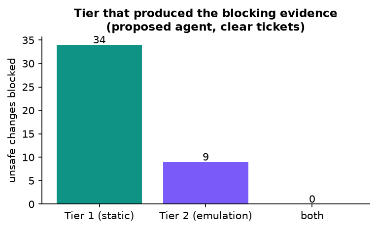
Figure 10 shows which tier did the work (RQ4). Tier 1 alone produced the blocking evidence for 34 unsafe changes, Tier 2 alone for 9 and both for 0. Independently, 18 unsafe test cases leave no trace at all in a static analysis (B4 approves them) - those are exactly the faults that justify the emulation tier.
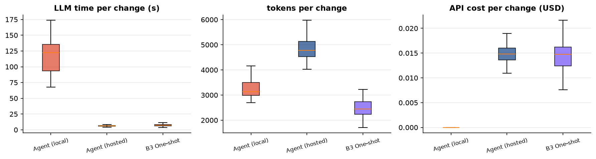
Figure 11 shows the price of the LLM part: on average 4859 tokens and $0.015 per change for the hosted model, i.e. about $15 per 1000 pull requests - negligible next to engineer time.
No paper from Phases 1-2 evaluates the same task on the same data, so a perfectly fair head-to-head is impossible. Table 13 lines up the closest comparable metric of each paper with ours and states what limits the comparison.
| Paper | Their task / data | Their reported result | Our comparable result | Comparability limits |
|---|---|---|---|---|
| [1] Aether (2026) | Agentic change validation, 8 synthetic scenarios + 2 ISP incidents | 94% faulty-change detection; 6-7 min/change | 98% detection on 45 unsafe test changes; 2.4 modelled min/change | Different networks and twin; Aether used real Batfish/NS-3 and wall-clock time; no fixed-suite baseline in [1] |
| [4] NetArena (2026) | Agents fixing networks in emulators | avg. correctness ~24%, best < 60%; some agents correct but unsafe | false approval 2.2% (safety measured separately, as [4] recommends) | Fixing is harder than judging; we judge someone else's change |
| [5] Cleverest (2026) | LLM regression tests from commit intent | 20 bugs with intent vs 4 without | detection 98% clear / 91% vague; terse: 0 approvals, 86% escalated | Software commits vs network changes; same direction: intent quality drives test quality |
| [6] CORNETTO (2026) | Agentic config repair with Batfish | regressions 34% -> <6% (agent vs one-shot); 1.3% with verifier feedback | false approval 2.2% (agent) vs 2.2% (one-shot B3, which also blocks 50% of safe changes; terse tickets: 0% vs 22%) | Repair vs validation; their regressions are new spec violations, ours are approved unsafe changes |
| [7] NetIntent / [8] LLNet (2025) | Intent translation with local models | 86-100% correct translation with few-shot prompts | local 7B agent: 69% detection, 31.2% false approval on 32 cases | Translation accuracy vs gate verdicts; small datasets on both sides |
| [9] MeshAgent (2025) | Invariant-guided reliable management | >95% accuracy, abstention improves reliability | invariant guard + escalation: 86% abstention on terse tickets, 0 terse approvals | Only headline numbers of [9] are public |
| [11] Ding et al. (2025) | AutoML twin for latency | 500x faster than Mininet, latency only | Tier-2 checks only when a T2-relevant impact exists | Different purpose: their twin predicts, ours verifies |
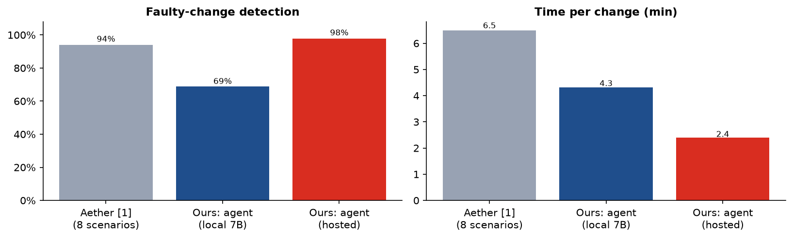
Read with these limits, our results are in line with the literature: like Aether we see high detection of faulty changes in minutes; like NetArena and CORNETTO we find that correctness and safety have to be measured separately and that verifier-grounded agents beat one-shot prompting; like Cleverest, intent text quality is the main driver of how much an LLM-generated test plan is worth. What none of them measured, and we did, is the comparison with a fixed CI suite on the same changes, with false approval as the main metric.
We removed or replaced one component at a time and re-ran the test split with clear tickets (Phase 2, Step 10). The tier ablations re-execute the same plans with one tier disabled, so they isolate the twin from the LLM.
| Variant | Detection | False approval | False block | Safe auto-approved | Req. cov. | Tests | CI min |
|---|---|---|---|---|---|---|---|
| Full agent | 98% | 2.2% | 5% | 93% | 94% | 12 | 2.4 |
| - impact analyzer | 96% (-2) | 4.4% (+2) | 48% (+43) | 48% (-45) | 94% | 37 | 6.0 |
| - feedback loop | 98% (+0) | 2.2% (+0) | 5% (+0) | 93% (+0) | 94% | 12 | 2.4 |
| - invariant guard | 96% (-2) | 4.4% (+2) | 2% (-2) | 95% (+2) | 31% | 9 | 2.3 |
| Tier 1 only (static) | 98% (+0) | 2.2% (+0) | 7% (+2) | 57% (-36) | 94% | 12 | 0.9 |
| Tier 2 only (emulation) | 98% (+0) | 2.2% (+0) | 5% (+0) | 93% (+0) | 94% | 12 | 4.8 |
| vague ticket (not clear) | 91% (-7) | 8.9% (+7) | 10% (+5) | 88% (-5) | 90% | 10 | 2.2 |
| terse ticket (not clear) | 100% (+2) | 0.0% (-2) | 0% (-5) | 0% (-93) | 74% | 6 | 2.0 |
| local 7B model (32-case subset) | 69% (-29) | 31.2% (+29) | 25% (+20) | 69% (-24) | 88% | 10 | 4.3 |
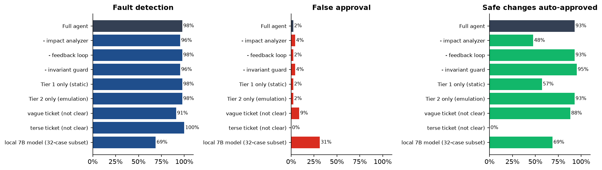
| Agent vs. | Pairs | Detection (agent-only / base-only) | False approval (agent / base) | False block (agent / base) | Tests (median diff) | CI time (median diff) |
|---|---|---|---|---|---|---|
| B1 Fixed full suite | 261 | 27 / 5, p=0.001 | 5 / 27, p=0.001 | 4 / 76, p<0.001 | -1446, p<0.001 | -1052 s, p<0.001 |
| B2 Rule-based | 261 | 51 / 2, p<0.001 | 2 / 51, p<0.001 | 4 / 67, p<0.001 | -17, p<0.001 | +8 s, p<0.001 |
| B4 Batfish-only | 261 | 51 / 2, p<0.001 | 2 / 51, p<0.001 | 6 / 0, p=0.156 | +2, p<0.001 | +5 s, p<0.001 |
| B3 One-shot LLM (hosted) | 261 | 15 / 4, p=0.134 | 4 / 15, p=0.134 | 3 / 61, p<0.001 | -17, p<0.001 | -26 s, p<0.001 |
| Proposed agent (local Qwen-7B) | 32 | 5 / 1, p=0.656 | 1 / 5, p=0.656 | 0 / 4, p=0.500 | +3, p<0.001 | -99 s, p<0.001 |
RQ1 - Do change-specific tests catch as many unsafe changes as a fixed suite, with fewer tests and less time? Yes. On clear tickets the agent detects 98% of unsafe changes against 80% for the full suite, with 12 instead of 1559 tests and 2.4 instead of 21 modelled minutes. The differences in detection, tests and time are significant after Holm correction (Table 15). The fixed suite still has one advantage: it tests failover of every link, so it catches the static-pin micro-loops that our agent misses (Section 7.4).
RQ2 - How often does the agent approve an unsafe change, and do evidence rules plus escalation reduce that to zero? Not quite to zero. The false-approval rate is 2.2% on clear, 8.9% on vague and 0.0% on terse tickets, against 20% for B1 and 40% for B4. The remaining false approvals are all of one kind (failover risk that no impact entry points to) or caused by vague tickets; the rules themselves never let a failing test or a violated invariant through. Escalations are useful: their precision is 50% on clear tickets.
RQ3 - How much do detection and escalation change with vague or terse tickets? A lot, in the way we hoped. Vague tickets cost detection (98% -> 91%) and add false blocks (5% -> 10%); terse tickets switch the agent into 'safe mode': 86% escalations, no approvals, unsafe changes with intent-independent faults still blocked. The intent analyzer's confidence rubric and the 'unsure' label are what make this work.
RQ4 - Which tier and which components matter most? The impact analyzer (blast radius) matters most for both detection and automation; Tier 2 is essential for safety (MTU, timers, overload, failover), Tier 1 for exhaustive formal checks; the feedback loop mainly increases automation; the invariant guard is a safety net (Section 6).
Consistency. Over 3 repeats per change x ticket, Fleiss' kappa is 0.92 and 92% of the verdicts are identical in all repeats; majority voting changes the rates by at most a few points. A deterministic judge on top of the LLM keeps the gate stable.
The Phase-2 gap had four parts. Gap 1 (no comparison of intent-aware selection vs a fixed suite on the same changes): addressed - B1-B4 and the agent ran on identical changes and snapshots. Gap 2 (false approval and escalation not measured): addressed - false approval is our primary metric, with escalation rate and precision. Gap 3 (effect of intent quality unknown): addressed with three ticket versions per change. Gap 4 (which twin fidelity is enough): addressed by recording the tier of each piece of evidence and by the tier ablation. The limitation is that our twin is our own code, so the absolute numbers are about our lab, not production networks.
Every wrong or non-automated verdict of the agent on the test split (55 change x ticket pairs over all three ticket versions, out of 261) was put into the Phase-2 failure buckets (Figure 14).
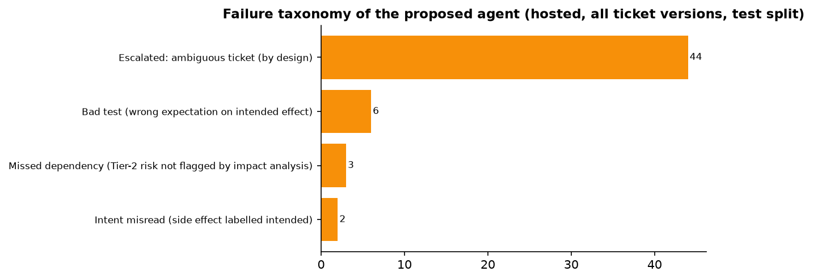
| Category | Count | What happened |
|---|---|---|
| Escalated: ambiguous ticket (by design) | 44 | terse/vague ticket; the agent asked a human instead of guessing - intended behaviour |
| Bad test (wrong expectation on intended effect) | 6 | an extra test encoded a wrong expectation (e.g. a path via the wrong router) |
| Missed dependency (Tier-2 risk not flagged by impact analysis) | 3 | the fault only shows on failure (static-pin micro-loop); no impact entry asked for a failover test |
| Intent misread (side effect labelled intended) | 2 | the planner accepted an unintended behaviour change as part of the goal |
Example 1 - missed dependency (D-STA-1-F, false approval). The ticket asks to pin traffic from leaf1 towards app-a1 onto spine1 with a static route. The diff does exactly that and Tier 1 shows only path changes, which the planner correctly labels intended; all 14 tests pass. But when the leaf2-spine1 link fails silently, spine1 reroutes via other leaves while leaf1 keeps forcing traffic to spine1: a micro-loop and an infinite outage for web-a1 -> app-a1. Only a failover test would show it, and no impact entry asked for one. B1 blocks this change because it tests failover of every link. Fix for future work: a rule 'static route added -> failover tests on the links of the pinned path'.
Example 2 - intent misread with a vague ticket (D-ACL-2-F). Clear ticket: 'add deny tcp 10.101.2.0/24 10.102.1.0/24 eq 443'; the faulty diff denies all IP from staging to the app. With the clear ticket the agent labels the extra denied services unintended and blocks. With the vague ticket ('Stop staging from hitting the production app') blocking everything is a reasonable reading, so the planner labels it intended and approves - the Clarify [10] ambiguity problem in action.
Example 3 - correct escalation (I-BGP-1-S, terse). The ticket is 'implements CHG-9791'. The intent analyzer returns confidence 'low' and 'ticket_says: nothing'; the impact analyzer finds a new route 172.16.11.0/24; the planner labels it 'unsure'; the judge escalates. B1 and B2 block this safe change and B4 escalates it too - but B4 would also have approved the faulty version of other changes that leave no static trace (Figure 21 shows this run in the GUI).
The screenshots below are taken from the running prototype on our machine (GUI in Chrome; terminal output captured from real runs).
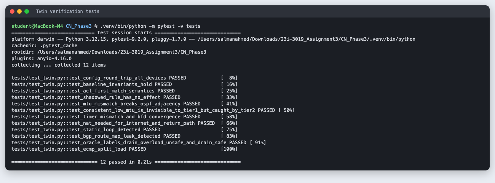
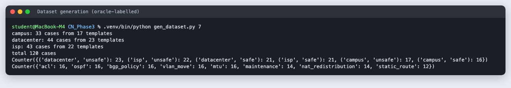
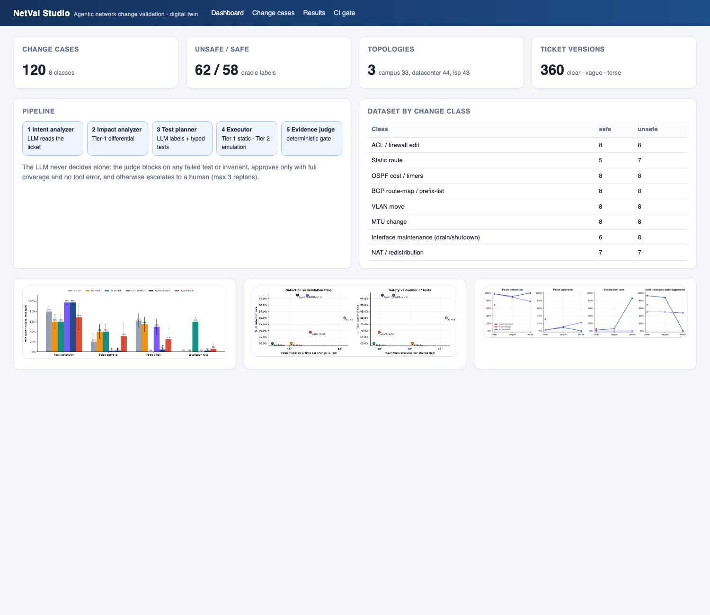
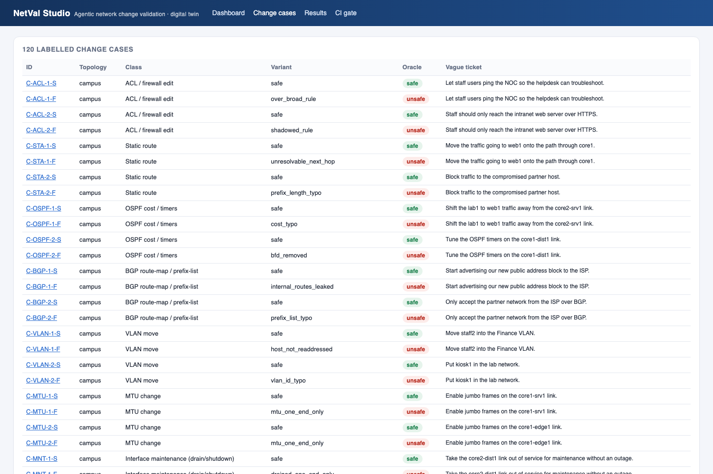
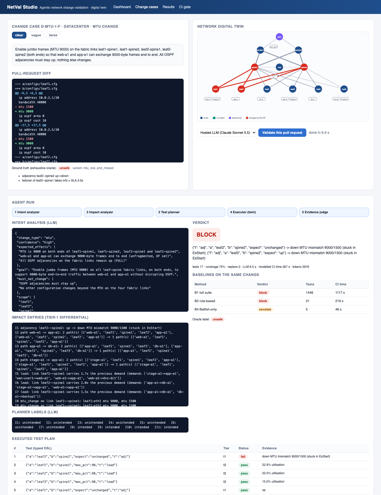
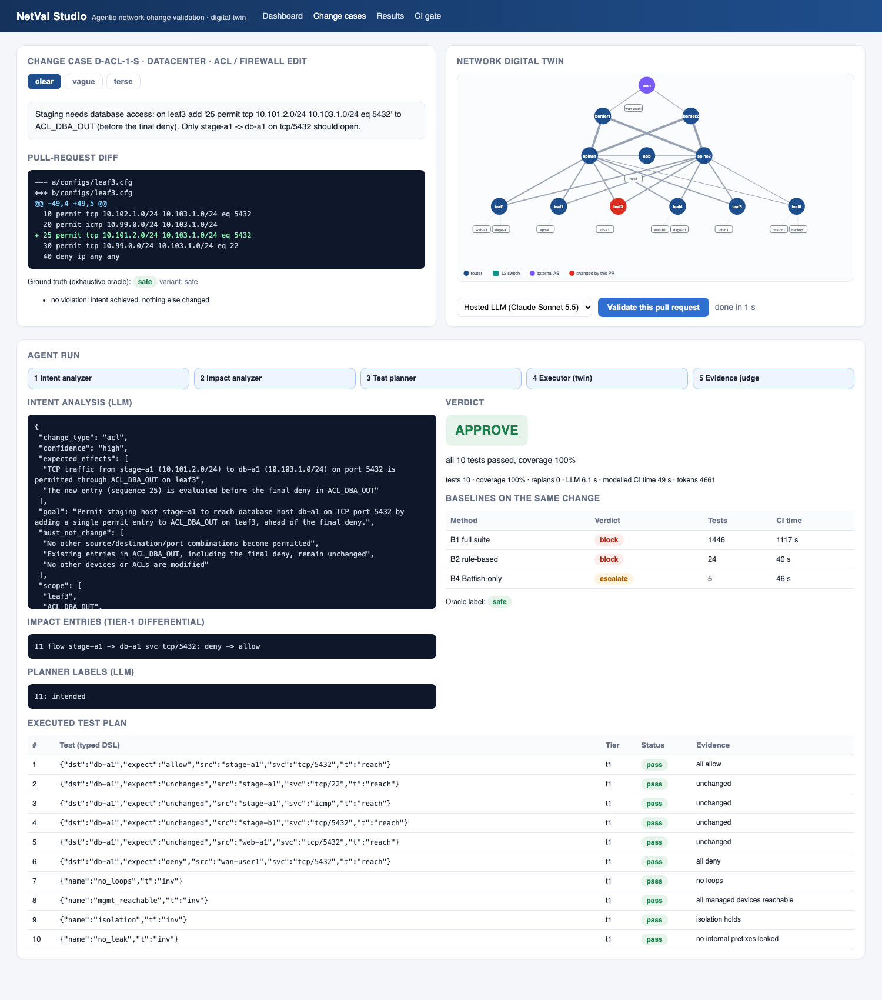
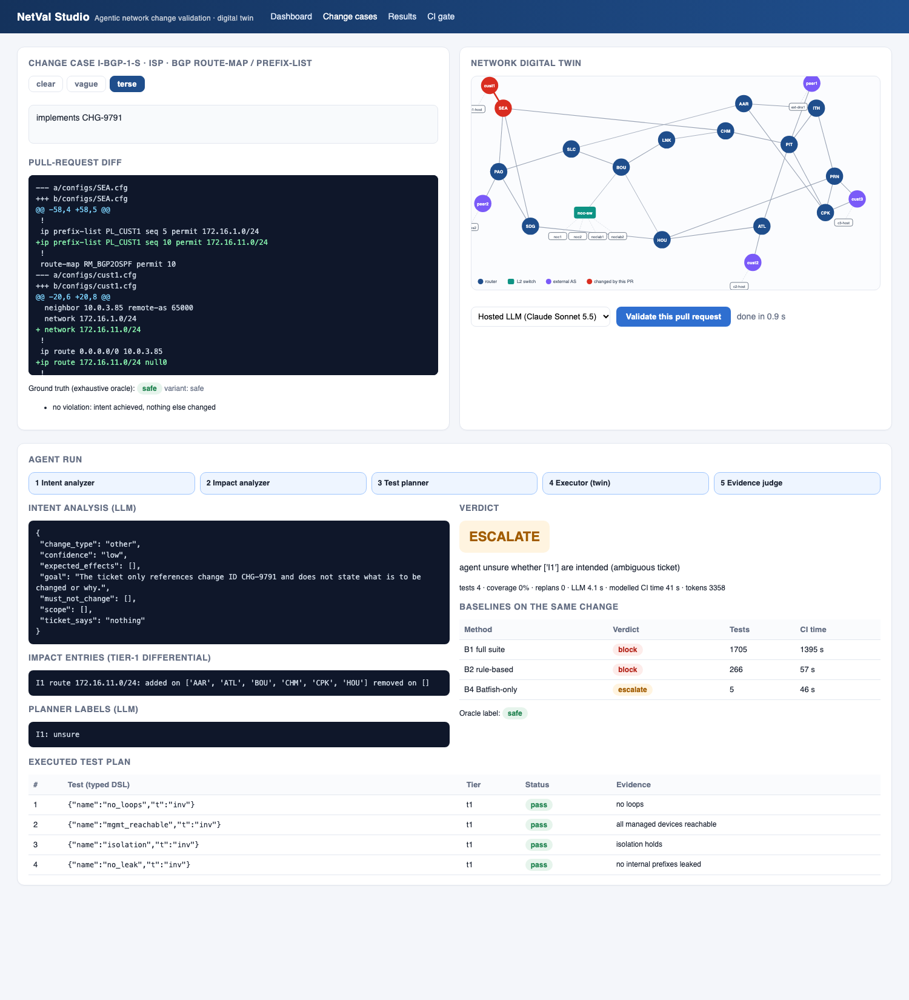
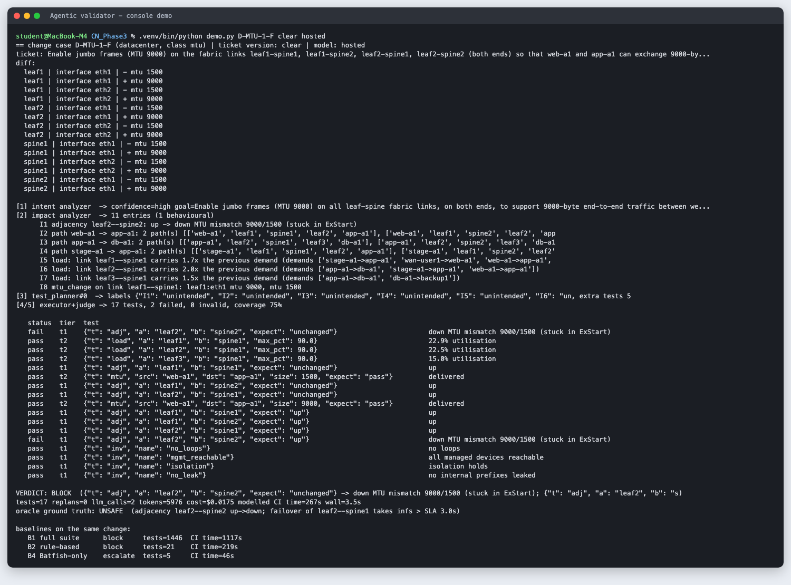
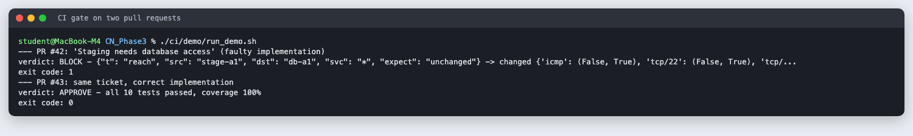
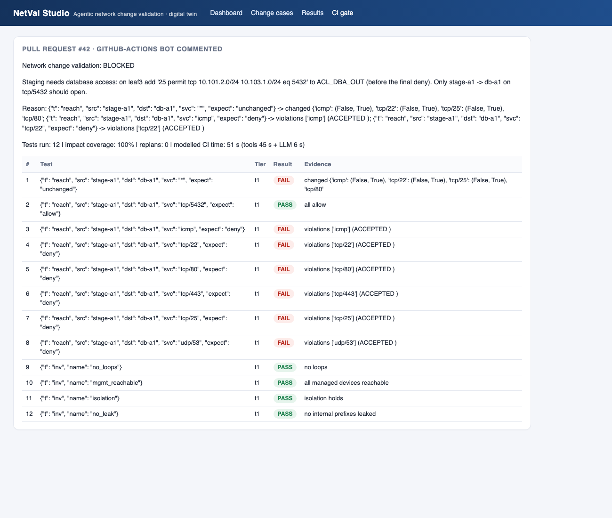
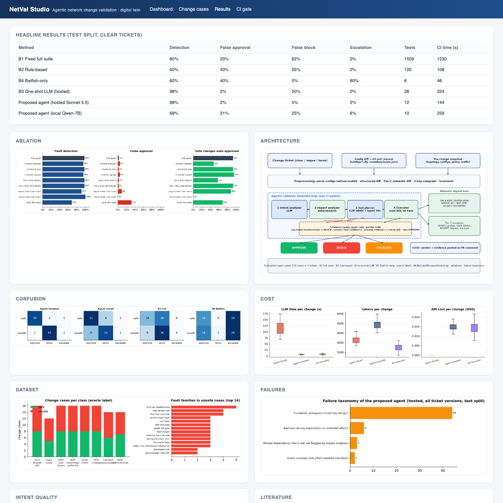
We implemented the Phase-2 methodology end to end and evaluated it on 120 labelled network changes with three ticket versions each. On clear tickets the intent-aware agent caught 98% of unsafe changes with 2.2% false approvals while running 12 tests in 2.4 modelled minutes, where a fixed full suite caught 80%, approved 20% of unsafe changes, blocked 62% of safe ones and needed 1559 tests and 21 minutes. With an ID-only ticket the agent never approved anything. The blast-radius analysis and the emulation tier are the two parts that matter most.
Next steps for the final phase: (1) add the static-route failover rule and a 'promised effects must be tested' rule and re-run; (2) port Tier 1 to real Batfish and Tier 2 to containerlab on a Linux machine to check that the numbers hold with real tools; (3) run larger local models (e.g. 14-32B, as in NetIntent [7]) on the full grid on a machine with more memory; (4) collect a small set of real anonymised change tickets to test on messy intent.
You are the intent analyzer of a network change-validation pipeline.
Read the change ticket and state what the TICKET asks for. The config diff is shown only so you can name devices;
it is NOT evidence of intent (the diff may contain mistakes - that is what we are checking).
Reply with JSON only:
{"ticket_says": "<paraphrase of what the ticket text itself requests, or 'nothing' if it only gives an ID>",
"goal": "<one sentence>", "change_type": "acl|static_route|ospf|bgp_policy|vlan_move|mtu|maintenance|nat_redistribution|other",
"scope": ["<devices/hosts named in the ticket>"],
"expected_effects": ["<short, concrete, testable statements THE TICKET promises>"],
"must_not_change": ["<things the ticket says must stay the same>"],
"confidence": "high|medium|low"}
confidence rubric (judge the ticket text only):
high = the ticket names what changes and the expected effect (e.g. "permit icmp from 10.1.10.0/24 to the NOC; nothing else changes")
medium = the ticket states a goal but no exact objects (e.g. "Let staff ping the NOC")
low = the ticket is only an ID or a reference (e.g. "CHG-4412", "fix ticket #881", "per change request 7"); then
ticket_says = "nothing", expected_effects = [] and you must NOT guess the purpose from the diff.You are the test planner of a network change-validation pipeline. A digital twin compared the network
before and after the change and listed every behavioural difference (impact entries I1, I2, ...).
Your job:
1. For EVERY impact entry decide whether the TICKET explains it:
"intended" - the ticket asks for exactly this effect (same hosts/subnets, same service, same direction)
"unintended" - the ticket does not ask for it, asks for the opposite, or the entry is BROADER than asked
(e.g. ticket allows only icmp but the entry opens svc ALL; ticket concerns staff but the entry is
about finance hosts; ticket says reachability must not change but a flow changed)
"unsure" - the ticket gives no purpose (only an ID) or is too vague to decide
The diff is NOT evidence of intent: it may contain the mistake we are looking for.
Entries of kind load / mtu_change / timer_change are compiled into safety tests automatically; just label them.
Entries of kind path: "intended" if the ticket asks to move/steer/drain traffic, otherwise "unintended".
VLAN moves: flow entries of the MOVED host are "intended" when the ticket says it should get the access of its new
VLAN/group; then add one {"t":"like","host":<moved>,"as":<a host already in that VLAN>} test instead of guessing.
Only write reach expectations the ticket states explicitly; never guess the access of services it does not mention.
2. Add extra tests (typed DSL) for every concrete effect the ticket PROMISES, whether or not it appears in the impact
list (e.g. "staff1 can ping noc1" -> reach allow; "route must appear on peer1" -> route present; "goes via X" ->
path via X true; "9000-byte frames pass between a and b" -> mtu size 9000 pass; "link drained" -> load max_pct 0).
If the ticket promises nothing concrete, add no extra tests. At most 12 extra tests; do not repeat impact entries.
Example: ticket "allow icmp from staff to noc1" with entries I1 flow staff1->noc1 svc icmp deny->allow and
I2 flow staff1->noc1 svc ALL deny->allow -> {"labels":{"I1":"intended","I2":"unintended"},"extra_tests":[{"t":"reach","src":"staff1","dst":"noc1","svc":"icmp","expect":"allow"}]}
Example: ticket "CHG-5521" with entry I1 flow a->b svc tcp/443 allow->deny -> {"labels":{"I1":"unsure"},"extra_tests":[]}--- a/configs/leaf3.cfg +++ b/configs/leaf3.cfg @@ -49,4 +49,5 @@ 10 permit tcp 10.102.1.0/24 10.103.1.0/24 eq 5432 20 permit icmp 10.99.0.0/24 10.103.1.0/24 + 25 permit ip 10.101.2.0/24 any 30 permit tcp 10.99.0.0/24 10.103.1.0/24 eq 22 40 deny ip any any
## Network change validation: **BLOCKED**
> Staging needs database access: on leaf3 add '25 permit tcp 10.101.2.0/24 10.103.1.0/24 eq 5432' to ACL_DBA_OUT (before the final deny). Only stage-a1 -> db-a1 on tcp/5432 should open.
**Reason:** {"t": "reach", "src": "stage-a1", "dst": "db-a1", "svc": "*", "expect": "unchanged"} -> changed {'icmp': (False, True), 'tcp/22': (False, True), 'tcp/25': (False, True), 'tcp/80'; {"t": "reach", "src": "stage-a1", "dst": "db-a1", "svc": "icmp", "expect": "deny"} -> violations ['icmp'] (ACCEPTED ); {"t": "reach", "src": "stage-a1", "dst": "db-a1", "svc": "tcp/22", "expect": "deny"} -> violations ['tcp/22'] (ACCEPTED )
Tests run: 12 | impact coverage: 100% | replans: 0 | modelled CI time: 51 s (tools 45 s + LLM 6 s)
| # | Test | Tier | Result | Evidence |
|---|---|---|---|---|
| 1 | `{"t": "reach", "src": "stage-a1", "dst": "db-a1", "svc": "*", "expect": "unchanged"}` | t1 | FAIL | changed {'icmp': (False, True), 'tcp/22': (False, True), 'tcp/25': (False, True), 'tcp/80' |
| 2 | `{"t": "reach", "src": "stage-a1", "dst": "db-a1", "svc": "tcp/5432", "expect": "allow"}` | t1 | PASS | all allow |
| 3 | `{"t": "reach", "src": "stage-a1", "dst": "db-a1", "svc": "icmp", "expect": "deny"}` | t1 | FAIL | violations ['icmp'] (ACCEPTED ) |
| 4 | `{"t": "reach", "src": "stage-a1", "dst": "db-a1", "svc": "tcp/22", "expect": "deny"}` | t1 | FAIL | violations ['tcp/22'] (ACCEPTED ) |
| 5 | `{"t": "reach", "src": "stage-a1", "dst": "db-a1", "svc": "tcp/80", "expect": "deny"}` | t1 | FAIL | violations ['tcp/80'] (ACCEPTED ) |
| 6 | `{"t": "reach", "src": "stage-a1", "dst": "db-a1", "svc": "tcp/443", "expect": "deny"}` | t1 | FAIL | violations ['tcp/443'] (ACCEPTED ) |
| 7 | `{"t": "reach", "src": "stage-a1", "dst": "db-a1", "svc": "tcp/25", "expect": "deny"}` | t1 | FAIL | violations ['tcp/25'] (ACCEPTED ) |
| 8 | `{"t": "reach", "src": "stage-a1", "dst": "db-a1", "svc": "udp/53", "expect": "deny"}` | t1 | FAIL | violations ['udp/53'] (ACCEPTED ) |
| 9 | `{"t": "inv", "name": "no_loops"}` | t1 | PASS | no loops |
| 10 | `{"t": "inv", "name": "mgmt_reachable"}` | t1 | PASS | all managed devices reachable |
| 11 | `{"t": "inv", "name": "isolation"}` | t1 | PASS | isolation holds |
| 12 | `{"t": "inv", "name": "no_leak"}` | t1 | PASS | no internal prefixes leaked |
<details><summary>Agent trace</summary>
```json
[
{
"step": "intent_analyzer",
"prompt_chars": 311,
"response": {
"ticket_says": "On leaf3, add ACL entry '25 permit tcp 10.101.2.0/24 10.103.1.0/24 eq 5432' to ACL_DBA_OUT, positioned before the final deny, so that